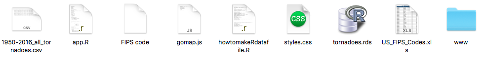
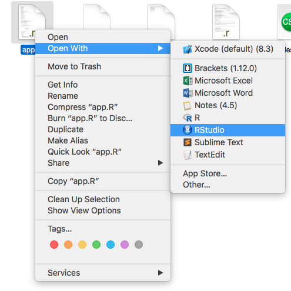
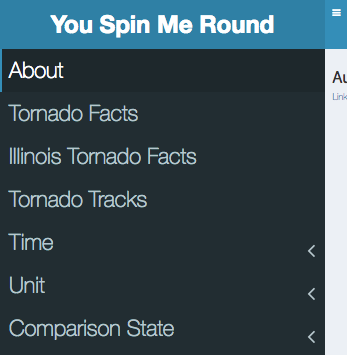
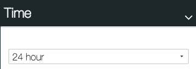
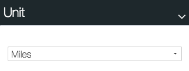

Data
The data utilized was chosen by the professor of the course, Dr. Andy Johnson.
For the application, we created bar charts and pie charts using the ggplot library once the data was processed into R Studio.
Data Manipulation
The data was cleaned and reduced by python script given by Professor Johnson. This script allowed us to turn CSV files to TSV files, with various lookup codes added.
Libraries Used:
library(shiny)
library(shinydashboard)
library(ggplot2)
library(lubridate)
library(DT)
library(jpeg)
library(leaflet)
library(dplyr)
library(plotly)
"allows us to add missing values"
library(tidyverse)
"Allows us to piviot tables if needed"
library(reshape)
"libary that lets us find distances between two LAT, Long"
library(geosphere)
library(measurements)
library(RColorBrewer)
library(scales)
library(lattice)
library(sp)
library(leaflet.extras)
___________________________________________________________________________________________________________________
Insights on How to Use
File Sytem

The two R files: app.R and howtomakeaRdatafile.R which are taking the data from the .csv file
A javascript file for animation implementation
A css file for styling and proper sizing for class projector

The Main Menu System

About: Has developers information and link to this website
Tornado Facts: Has links to c
Illinois Tornado Facts
Tornado Tracks
Time

Unit

Comparison State